충남대학교 컴퓨터공학과 이성호 교수님의 "프로그래밍 언어 개론" 강의를 필기한 내용입니다.
다소 잘못된 내용과 구어적 표현 이 포함되어 있을 수 있습니다.
직간접 호출
- 직접호출(Direct Recursion) : 함수 A가 자기자신인 A를 다시 호출하는것
- 간접호출(Indirect Recursion) : 함수 A가 일단 다른 함수 B를 먼저 호출하고 그 함수 B가 A를 호출하는것
RCFVAE
- RCFVAE는 함수 재귀호출을 지원하는 언어이다
- 원래 CFVAE에서는
<ㅅx.e, 시그마>에서 함수 몸체를 계산하는데 필요한 추상메모리가 시그마인데 함수선언시에 이 시그마에 자기자신 함수가 들어있지 않기 때문에 자기자신을 재귀호출할 경우 자기자신은 Free Identifier로 분류되어 Runtime error가 나게 된다
Concrete Syntax
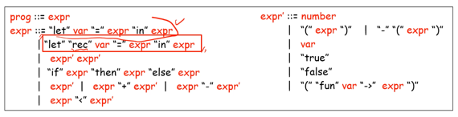
- 일반적인 함수 호출을 지원하는 let fun in구문과 별도로 let rec fun in 구문을 concrete syntax에 추가했다
Abstract Syntax
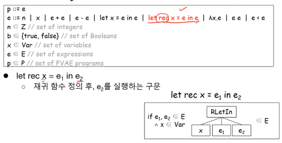
- 여기에도 마찬가지로 let rec x = e in e 추상문법과 그것을 나타내는 AST를 추가하였다
Bigstep Operational Semantics
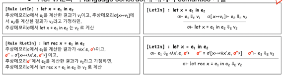
- 위에꺼가 기존의 일반함수 선언법, 아래꺼가 재귀함수 선언법이다
- 일단 재귀함수 호출법에서는 e1을 계산한 결과가 Closure이어야만 하고 그렇지 않은 경우에는 Runtime error를 출력해야 한다
- 일단 저 시그마 프라임은 전에 함수를 정의할때처럼 스코프가 함수 내부인, 함수의 몸체를 계산할때 쓰이는 추상메모리 이고
- 시그마 투프라임은 재귀함수 호출 구조를 그대로 생각하면 된다
- 재귀함수를 정의할 때에 안에 자기자신이 들어가듯이 시그마 투프라임을 정의할 때도 자기자신을 이용하여 재귀적으로 정의한 것
- 시그마 투프라임 없이 시그마 프라임 하나로만 정의하면 재귀가 한번밖에 돌지 못하는 구조가 된다?
- 시그마 투프라임이 없는 경우를 생각해보고 왜 안되는지를 생각할것
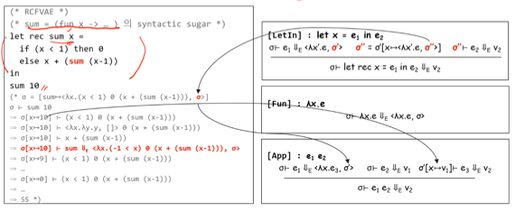
- 이 예시를 보면
- 일단 저기 빨간글씨 (-1 < x)는 오타인거같고
시그마 = [sum = <ㅅx.(x<1) 0 (x+(sum(x-1))), 시그마>]의 말뜻은 함수 정의시 시그마에 ”sum = Closure” 를 추가한 시그마를 함수 몸체를 계산할때도 사용하겠다 의 의미가 되는 것이다
OCaml Code
1. 시그마 투프라임을 그대로 정의해보기
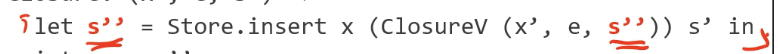
- 위처럼 정의하게 되면 우측(RHS - Right Hand Side)의 s’’은 아직 Free Identifier이기 때문에 에러가 난다
2. Rec 키워드 이용해보기
- OCaml에서 함수를 정의할 때 “let 함수이름 인자 = 몸체 in”은 “let 함수이름 = fun 인자 몸체 in”의 Syntactic sugar 이기 때문에 “let rec 무언가 = 무언가 in”도 지원한다는 것을 알 수 있다
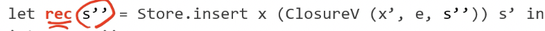
- 근데 위처럼 정의하면 에러가 난다
- rec 키워드를 사용할때는 조건이 붙기 때문
- 일단 RHS가 함수의 정의이고 그 함수의 몸체에서 재귀호출을 하거나
- RHS가 Disjoint Union의 Constructor이고 그의 인자로 재귀호출되며
- 이게 무슨말이냐면 위의 예시처럼 ClosureV라는 Disjoint Union(자료형)을 생성하기 위해 “ClosureV (인자)” 형태의 Disjoint Union Constructor (자료형 생성자)를 호출해서 인자를 넣어 ClosureV 자료형의 객체를 생성한것
- RHS 가 Function Application 이어서는 안된다
- rec 키워드를 사용할때는 조건이 붙기 때문
- 위의 예시에서는 세번째 조항때문에 문제가 생기는 것 이다
3. Function Application을 제거해보기
- 저 insert함수가 그냥 :: 으로 리스트에 추가하는 연산이 전부이기 때문에
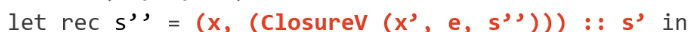
- 이렇게 표현하면 된다
- 하지만 여기서는 이제 에러는 안나지만 Stack Overflow가 일어나게 된다
- 왜냐면 Function Application이
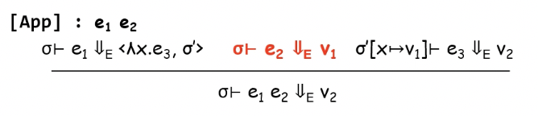
- 이렇게 정의되었기 때문
- 전에 boolean을 생각해보면 boolean을 인자 두개를 받아서 둘 중 하나를 반환하는 함수로 구현을 했는데 이때 반환되지 않는 인자의 값도 계산한다면 낭비일 것이다
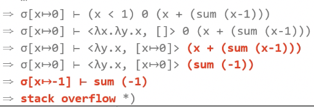
- 이 예시를 보면
<ㅅy.x, [x → 0]> (sum (-1))부분에서 y에 (sum (-1))이 담기긴 하지만 반환값은 x이므로 사용되지 않는다- 근데 이제 (sum (-1))을 계산하느라 또 재귀호출이 되고 어차피 -1 < 1이기 때문에 또 0을 반환해야되는데 반환하지도 않을 인자 (sum (-2))를 계산하고
- 이런식으로 가다 보니 스택이 터져 오버플로우가 나는 것
- 이것을 해결하기 위해 Expression Freezing 이 필요하다
Expression Freezing (Lazy Evaluation)
- Expression Freezing(Lazy Evaluation) : 어떤 expression을 등장과 동시에 계산하는 것이 아닌 얼려두었다가 값이 필요해지면 그제서야 계산을 하는 방법
- 위의 경우처럼 인자의 값 계산을 늦춰 계산할 필요가 없으면 계산하지 않는 것을 지원하기 위해존재한다
- 즉, 함수를 먼저 호출하고 인자의 값이 필요해지면 그때 인자의 값을 계산하는 방법
- 따라서 call-by-need 라고도 부른다
- 반대개념으로는 Eager Evaluation 가 있으며 얘는 반대로 인자를 먼저 계산하고 함수를 호출하는 방식
- 대부분의 함수형 언어들은 Eager Evaluation을 주로 사용하지만 이런 Lazy Evaluation또한 지원한다
예시1
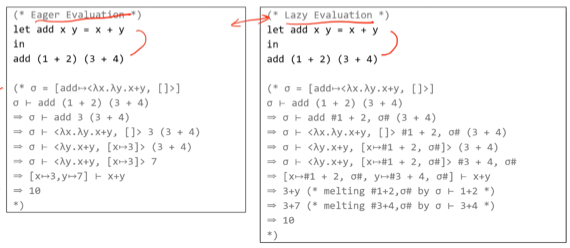
- 왼쪽이 Eager의 경우고 오른쪽이 Lazy의 경우이다
- 보면 “ # 뭐시기 # “가 해당 부분을 얼린다는 의미로
- 오른쪽을 보면 # 안의 expression을 계산하기 위해서는 expression 등장 당시의 store도 필요하기 때문에 (나중에 녹여서 계산할랫드니 store가 달라져서 값이 달라지면 안되니까) expression과 store를 같이 얼려놓는 것
- 그렇게 인자 두개를 다 얼려놨다가 최종 계산시에 녹여서 계산하게된다
예시2
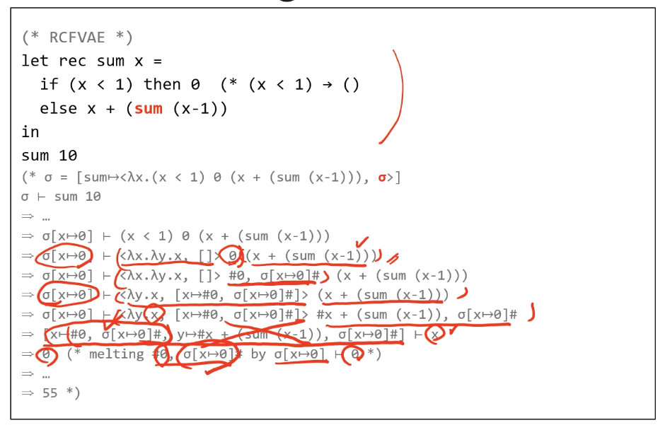
- 아까 무한루프를 돌았던 예시를 다시 보면 0과 sum()을 둘 다 얼려놨다가 마지막에 0을 반환해야되므로 0을 녹여서 반환하는 것을 알 수 있다
Lazy Expression in OCaml
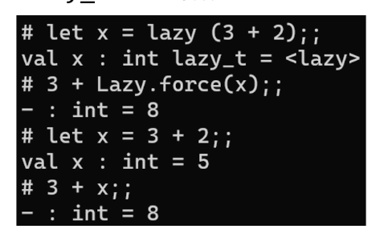
- lazy (표현식) : 으로 표현식을 얼리고
- Lazy.force(변수) : 로 얼려진 변수를 녹일 수 있다
Expression Freezing을 지원하는 RCFVAE
- 일단 App의 Semantics를 바꿀 필요가 있고
- 얼린 expression도 값이 될 수 있도록 Value domain도 확장시켜줘야 한다
- 또한 녹이는 절차도 필요하다 - 값을 꺼내오는 것은 “Id”에서 진행하기 때문에 “Id”의 Semantics도 녹이는 것을 지원하기 위해 변경되어야 한다
Value Domain
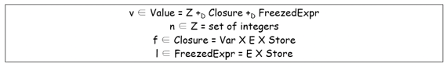
- 얼릴 값과 녹일때 사용하기 위한 얼릴 당시에의 store를 묶은 튜플로 FreezedExpr을 정의하여 추가해준다
Function Application
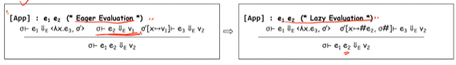
- 값을 바로바로 계산하는 Eager가 아니고 Lazy를 지원해주기 위해 e1을 먼저 Closure로 계산하고 e2를 계산하지 않고 얼려서 x와 매핑하여 시그마에 넣어주는 연산으로 바꿔준다
Id
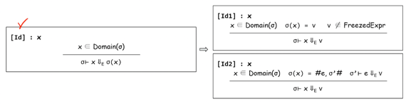
- FreezedExpr가 아니라면 그냥 바로 계산해주고(위에꺼)
- FreezedExpr이라면 거기에서 expression과 store를 꺼내서 얘네들을 계산해서 반환한다
좀 더 구조적으로 정의
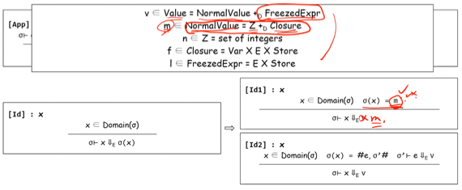
- Value를 FreezedExpr와 그것이 아닌 NormalValue로 먼저 나누고
- FreezedExpr의 원소인 I는 (e, s)의 형태를 갖고
- NormalValue의 원소인 m은 (정수 or 함수) 인 것으로 정의할 수도 있음
- 그것을 가지고 Id를 정의하면 위 그림의 아랫쪽처럼 정의할 수 있다
- 저 Id1에서 m대신 v를 쓰면 안된다!! 이렇게 Inference Rule의 Domain을 잘 지켜서 정답써야된다
Recursion as Syntactic Sugar
- 일단 Fixpoint Combinator를 일아야 한다
- Fixpoint Combinator의 수식은 다음과 같다
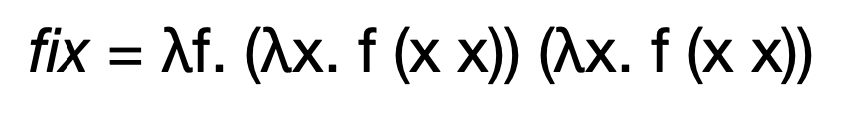
- 그리고 이놈의 특징은 다음과 같다
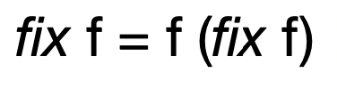
- 즉, 임의의 함수 f에 대해 fix f는 f의 fixed point이다
- 여기서 fixed point라는 것은 x = f(x) 를 만족하는 x를 의미하고
- 따라서 Fixpoint Combinator는 임의의 함수 f를 인자로 받아x = f(x) 를 만족하는 함수x를 반환하는 함수이다
- 뭔말인지 모르것제? 나도 모르겠다
- 일단 저 수식이랑 특징만 기억하고 이 아래 예시를 봐라
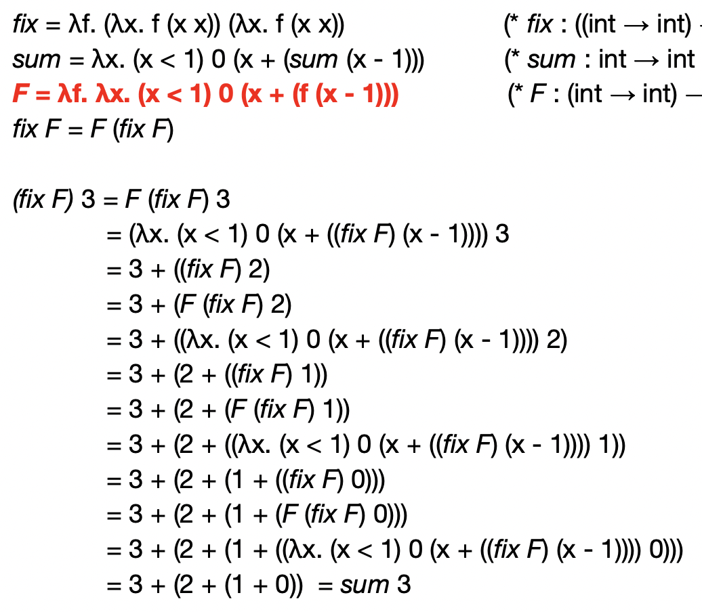
- 일단 저 fix로 어떻게 재귀함수를 만들어내는지 알려드림
- 함수 sum을 아래 F처럼 변형한 뒤 fix에 넣어주면 재귀함수가 된다
- 위의 과정을 보면 fix의 특징을 이용해 재귀적으로 함수가 돌아가는 것을 보이는데 이 특징이 저 수식을 통해 유도되는 것이다
- 그럼 F는 어떻게 만들어내냐
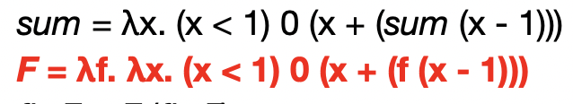
- 이렇게 재귀호출되는 함수를 인자(f)로 받게 해서 함수를 구성하면 된다
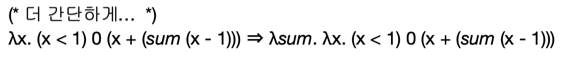
- 더 간단하게는
ㅅsum.만 붙이면 된다 - 따라서 재귀함수를 Syntactic Sugar를 이용해 표현하고 Desugaring을 하는 과정은 다음과 같다
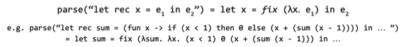
- 걍 저렇게 fix F 만 해주면 재귀적으로 함수가 돌아감
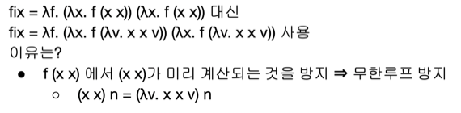
- 실제 구현에서는 위와 같은 Fixpoint Combinator를 사용함
- x x가 미리 계산되면 아까처럼 stack overflow가 나기 때문에 x x를 나중에 계산하기 위해 freezing 얼려놓는것
- 함수란 것이 결국에는 인자가 들어와야 계산되므로 계산시점을 내가 정할 수 있어 expression freezing이랑 유사한 기능을 한다
- 정 이해안되면 여기는 fix의 수식(+구현시 사용되는 수식)과 특징, F를 구성하는법, fix F로 돌리면 재귀함수가 된다는 것 이거 그냥 외워라